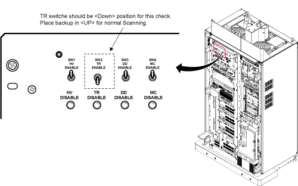
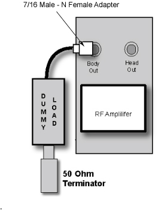
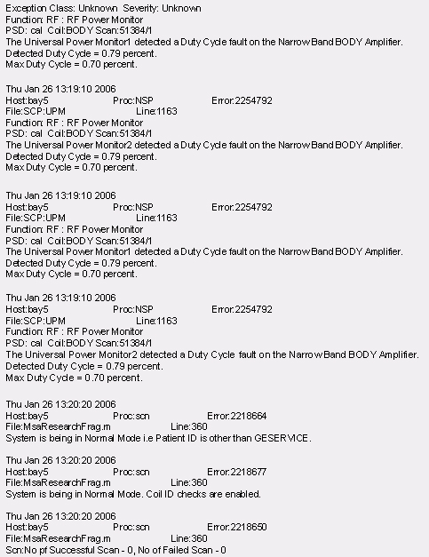
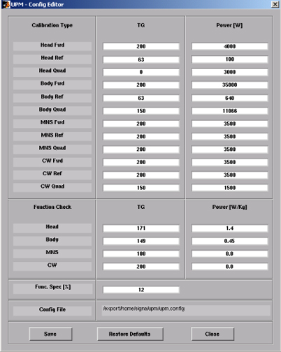

UPM- Body and Head Functional Check
Prerequisites
Overview
The UPM Functional checks for 1.5T consist of three automated tests:
-
Peak Power, Pulse Width, Duty Cycle at TG=170
-
RF Inhibit test (Check that RF is disabled when inhibit condition)
-
Trip Test
All 3 automated tests must pass to ensure the correct operation of the Universal Power monitor system.
Run both Head and Body UPM Functional checks for the proper system type.
1 1.5T BODY UPM FUNCTIONAL CHECK
1.1 1.5T BODY UPM FUNCTIONAL CHECK Setup
Procedure
- Inhibit TR faults. Disable the Driver Module in the System Cabinet,Figure 1. Move switch 2 to the TR Disable position.
Figure 1. Driver Module Front Switches

- Place the RF ENABLE switch on front of exciter in the DISABLE (Down) position.
- Remove the Body RF cable from J4. Connect the RF dummy load
into J4. Use 7/16 Male - N Female Adapter attached in System Cabinet.note:
If the body section of the 1.5T SRFD3 Max Power RF Output and Calibration procedure was just completed, configuration is the same. You can leave the head RF cable disconnected and body can keep the wattmeter in line. It will not change the outcome of the calibration.
note:7/16Male -N Female Adapter is located at System Cabinet Left Shelf. Remove left cover and find it. See Figure 2Figure 2. Built In Service Tool

Figure 3. Plug the Dummy Load into J4, Body Out

- Place the RF ENABLE switch in the ENABLE (Up) position.
1.2 Setting up Software Tool to Calibrate UPM – Body Forward Power
This tool must see a Landmark only. It is not necessary to have a Body Phantom in place. Simply Landmark on the cradle where the Body Phantom would be.
Procedure
- Press Landmark.
- Press Advance to Scan.
- From the Common Service Desktop:
- Select Calibration Tab
- For the Class A/C service tool, select UPM Tool from the calibration menu and select Click here to start this tool
-
Figure 4 shows an example of the UPM tool.
Figure 4. UPM Main Window

- Select the Nuclei [1H].
- Select the RF Chain you are going to check [Body].note:
Power Type selection will be grayed out. This is normal, and is not used.
- Select: [Func Chk] Button
- Select the [Start] button.
Figure 5. Body Coil Setup Question

- After that, the tool takes full control and runs the 3 functional
tests for whatever setup is currently active. The result of each test
is compared against a Specification File on the system. Status should
indicate Pass/Fail.
During the tests, the user will be prompted 3 times as each test completes. Look in the error log to confirm that the tests completed successfully. The following illustrations show an example of pop ups and error logs that should be seen.
Figure 6. Body Peak UPM Trip Question

Figure 7. Body Pulse Width Trip Question

Figure 8. Body Pulse Duty Cycle Trip Question

Figure 9. Error Log Example Showing Body Duty Cycle Trip Question

Figure 10. Pass Message
 note:
note:A TPS Reset must be preformed when testing is complete before scanning can resume.
- To proceed:
- If any one of the tests fail, refer to Troubleshooting UPM.
- If all 3 tests pass, proceed to 1.5T 1.5T HEAD UPM FUNCTIONAL CHECK
2 1.5T HEAD UPM FUNCTIONAL CHECK
2.1 1.5T HEAD UPM FUNCTIONAL CHECK Setup
Procedure
- Inhibit TR faults. The Driver Module in the System Cabinet,
(see Figure 11) . Move switch 2 to the TR Disable position.
Figure 11. Driver Module Front Switches
- Place the RF ENABLE switch on front of exciter in the DISABLE (Down) position.
- Remove the head heliax able from J3 at the back of the RF Amplifier
and connect it directly to the RF dummy load.note:
If the Head RF power out procedure was just completed, configuration is the same. You can leave the Body RF heliax cable disconnected and the head output can keep the wattmeter in line. It will not change the outcome of the calibration.
Figure 12. Setup for Head Output Measurement

- Place the RF ENABLE switch in the ENABLE (Up) position.
2.2 Setting up Software Tool to Calibrate UPM – Head Forward Power
It is necessary to have a Head coil in place. It is not necessary to have a Head Phantom in place. Simply Landmark on the Head Coil.
Procedure
- Withdraw the Cradle from its previous position.
- Place the head coil on the cradle.
Figure 13. Head Coil Setup

- Press Landmark
- Press Advance to Scan
- Select the Nuclei 1H
- Select the RF Chain you are going to check Head.
- Select: Func Chk Button
- Select the Start button.
Figure 14. Head Coil Setup. Click [Yes] When The Head Coil Is Ready To Go
- After that the tool takes full control and runs the 3 functional
tests and the UPM status should indicate Pass/Fail.
During the tests, the user will be prompted 3 times as each test completes. Look in the error log to confirm that the tests completed successfully. The following illustrations show an example of pop ups and error logs that should be seen.
Figure 15. UPM Looping Trips

Figure 16. UPM Duty Cycle Loop Trip
Figure 17. Duty Cycle Look Trip Log Example

Figure 18. UPM Head Pass Message

- To proceed:
- If all three tests pass, select Quit from the UPM Main Window
- If any one of the tests fail, refer to Troubleshooting UPM.
3 Troubleshooting UPM
Procedure
- Solution 1:
- Check all cabling to the UPM’s make sure that they are properly cabled.
- Repeat the UPM Functional Test for the receive chain that failed. (Head or Body).
- Solution 2
- Cycle Power to the UPM Chassis
- Reset TPS
- Repeat the UPM Functional Test for the receive chain that failed. (Head or Body).
- Solution 3, reboot the system.
- Solution 4
- Remove power from the UPM.
- Reseat the Processor Module.
- Restore Power to the UPM.
- Reset TPS.
- Repeat the UPM Functional Test for the Receive chain that failed. (Head or Body).
- Solution 5
- Remove power from the UPM.
- Reset the Detector Boards
- Restore Power to the UPM
- Reseat TPS
- Repeat the UPM Functional Test for the Receive chain that failed. (Head or Body)
- Solution 6
- The problem could be a bad Processor Module
- Remove power from the UPM.
- Replace the Processor Module
- Restore Power to the UPM
- Reset TPS.
- Repeat the UPM Functional Test for the Receive chain that failed. (Head or Body)
- Solution 7
- The problem could be a bad Detector Board
- Remove power from the UPM
- Replace both Detector Boards
- Restore Power to the UPM.
- Reset TPS
- Repeat the UPM Functional Test for the Receive chain that failed. (Head or Body)
- For additional troubleshooting information, please refer to ASC-Lite Chassis Theory and Troubleshooting .
4 UPM Theory
The Universal Power Monitor calibration parameters found in the UPM Calibration file (/export/home/signa/tools/upm.config) are used in the calibration/Functional Check program. The Program code sets the Digital attenuators in the UPM based on the results of the 3 tests run, and a comparison to these UPM Calibration parameters. This calibration file is accessible from within the UPM Calibration tool from the “File” pull-down Menu, “Edit Config” Option. These values can be edited and saved during troubleshooting to perhaps understand where the power monitor is tripping, (If at all). Before changing any parameter, Make sure to select and run the “Bkup UPM Cal” option first. This will allow you to return to the default values at any time. The Screen shot of the UPM Calibration file found in this document contains the default configuration values for all of the UPM parameters as of December 8, 2003. (Use the [Restore Defaults] on the config file editor GUI to always get back to known default values).The final UPM digital attenuator values are written to the UPM Calibration Configuration files (UpmCal1.cfg, UpmCal2.cfg.etc.,) located in directory: w/config
Procedure
- The format of Upm1Cal.cfg and Upm2Cal.cfg example is as follows:
- 85←Head FORWARD Power, attenuator setting in HEX
- 9f← Not Used
- 0← Not Used
- 8d← Body FORWARD Power, attenuator setting in HEX
- 8e←Not Used
- 9d←Not Used
-
Figure 19. Any changes to these values are temporary and
can be quickly restored by selecting the restore defaults button.
Figure 19. UPM Config Editor

5 Finalization
Procedure
- Upon successful completion of the functional check(s):
- Place the RF ENABLE switch on front of exciter in the DISABLE (Down) position.
- Return the system to patient scanning configuration.
- Perform test scan.